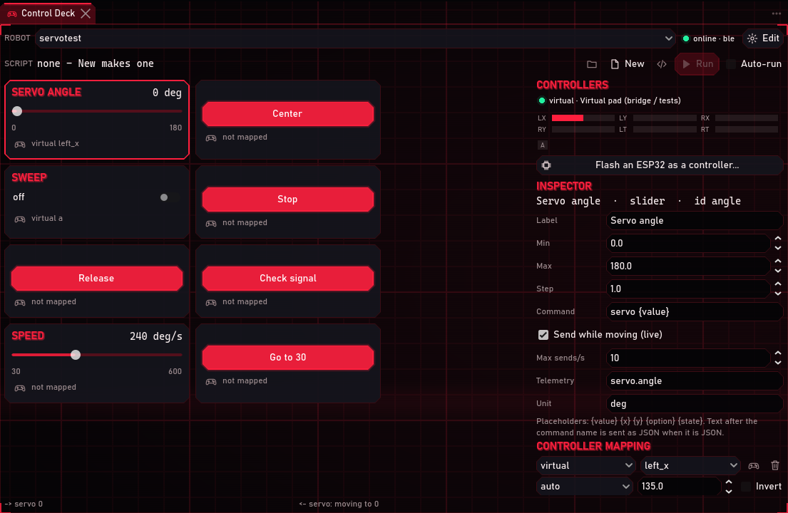
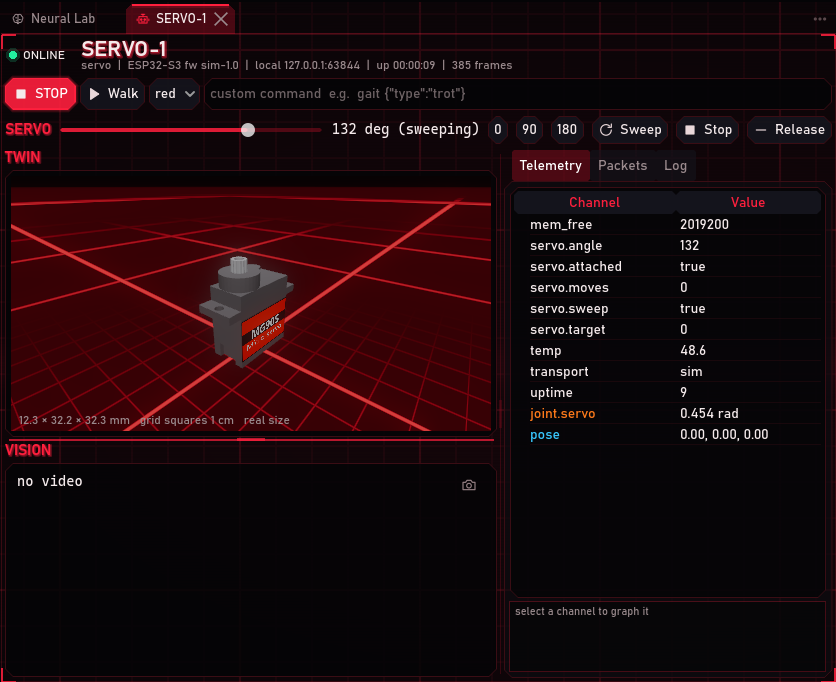
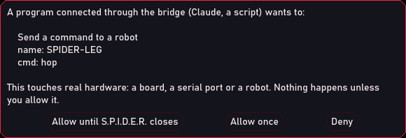

Flash Bay
Its own ESP32 flasher
Talks to the chip's boot ROM directly: detects the chip and flash size, erases, writes, verifies. No esptool, no Arduino.
Software · robotics
A command center for building, flashing, connecting and watching robots. Plug in an ESP32, flash it from the app, and it shows up on the dashboard over Bluetooth by itself, with a live 3D twin and controls you can drive with a gamepad.
Screens · click to enlarge
Every screenshot is from a real session, with real hardware or S.P.I.D.E.R.'s virtual robots. Network and Bluetooth addresses are blacked out.
What it does
Every section is a panel you can dock, tab, or pull out into its own window. Five built-in layouts, plus your own.
Flash Bay
Talks to the chip's boot ROM directly: detects the chip and flash size, erases, writes, verifies. No esptool, no Arduino.
Link Hub
Robots connect over the PC's own Bluetooth, USB or Wi-Fi, and come back by themselves after a reset, in about five seconds.
Robot screens
Each robot gets gauges, telemetry graphs, a camera view, a packet inspector and a 3D model that moves with the real one.
Control Deck
Sliders, buttons, toggles and a joystick per robot. Map a gamepad or an ESP32 controller, or script it in Python, C# or C++.
Code Forge
C#, Python, C++, JSON and Markdown with live errors and quick fixes. Run a script on the PC, or send it to the board in one click.
Serial Monitor
Text and hex terminal with reset lines and colour-coded firmware logs. Attach a USB board as a robot link.
Neural Lab
Loads real insect connectome data, draws it in 3D and runs a learning two-brain simulation, with each dataset's licence flagged.
Bridge
A switchable, token-protected local API: tools and AI assistants can run every command, with hardware actions behind a second switch.
Step by step · every step tested
Each guide was run start to finish, and its screenshots come from that run. Where a virtual robot stood in for the real board, the guide says so.

About 10 minutes · hardware
From a blank board to a servo that moves from the dashboard, with a live 3D twin. No pairing, no Arduino, no esptool.
Open tutorial →
About 15 minutes · controls
Build on-screen controls, map a game controller to them, and program the deck in Python, C# or C++.
Open tutorial →
About 20 minutes · 3D
Rig it in Blender, export it at real size, and your robot's 3D twin moves the way the real one does.
Open tutorial →
About 30 minutes · hardware + 3D
Export a two-servo leg from Blender, map its joints, flash the board with the leg's code and drive it over Bluetooth.
Open tutorial →
About 5 minutes · bridge
Claude Code, a script or an ESP32 works in the S.P.I.D.E.R. you have open, and asks you before it touches hardware.
Open tutorial →Wiring sheets · click to enlarge
Get it
Looking for the latest release...
Windows may warn that the app is from an unknown publisher until releases are code-signed. Choose More info, then Run anyway.
The first time it starts, S.P.I.D.E.R. asks you to accept its user agreement.
How it is built
S.P.I.D.E.R. is proprietary software built only on permissively licensed parts: Godot (MIT), .NET (MIT) and Roslyn (MIT). A licence guard runs on every build and stops it if a dependency could force the code open or limit selling it.
The ESP32 flasher, Bluetooth link, editor checks, robot protocol and control deck are written from scratch.
Watch
Walkthrough videos are on the way. Until then, the tutorials above show every step with screenshots.
Support
Check the troubleshooting section at the end of each tutorial first. If that does not fix it, send a report: it goes straight to my issue tracker.